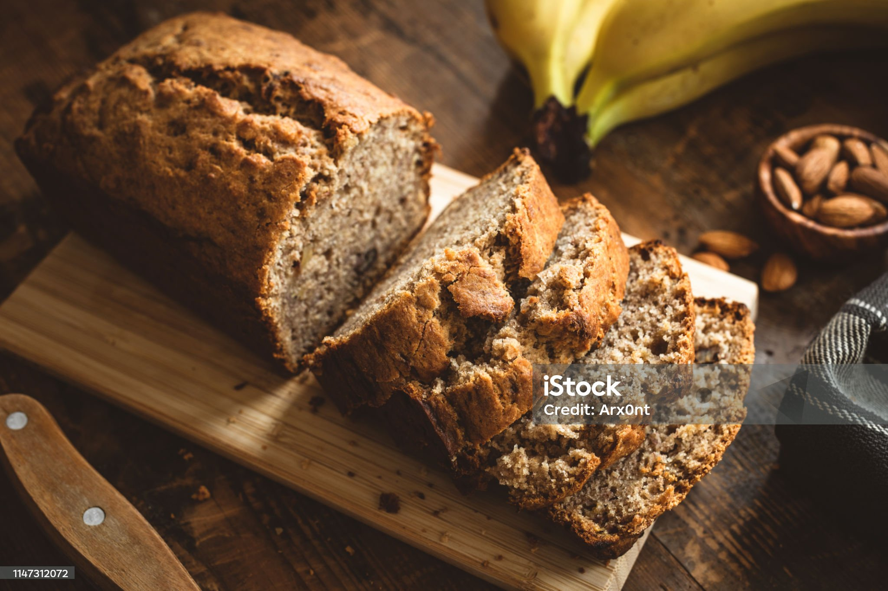

Banana Bread

Description
Whether you have a brunch or bake sale coming up, or if you just need to use up your overripe bananas, this banana bread is sure to please. This recipe has been tested and perfected, is quick and easy to make, and is easily adaptable to add other flavors and add-ins.
This banana bread is easy to make, and irresistable to eat. I recommend making a couple loaves, and wrapping the extra in plastic wrap to freeze. When you are ready to eat it, just take it out of the freezer for an hour and let thaw on your countertop. You will have perfectly moist banana bread ready to go.
Ingredients
- 1 1/4 cups all purpose flour
- 1 teaspoon baking soda
- 1/2 teaspoon fine salt
- 2 large eggs
- 1/2 teaspoon vanilla extract
- 1/2 cup unsalted butter, at room temp, plus more for preparing the pan
- 1 cup sugar
- 3 very ripe bananas, peeled, and mashed with a fork
- 1/2 cup toasted walnut pieces
Steps
- Sift the flour, baking soda, and salt into a medium bowl, set aside. Whisk the eggs and vanilla together in a liquid measuring cup with a spout, set aside. Lightly brush a 9 by 5 by 3-inch loaf pan with butter. Preheat the oven to 350 degrees F.
- In a standing mixer fitted with the paddle attachment or with an electric hand-held mixer, cream the butter and sugar until light and fluffy. Gradually pour the egg mixture into the butter while mixing until incorporated. Add the bananas (the mixture will appear to be curdled, so don't worry), and remove the bowl from the mixer.
- With a rubber spatula, mix in the flour mixture until just incorporated. Fold in the nuts and transfer the batter to the prepared pan. Bake for 55 minutes or until a toothpick inserted into the center of the bread comes out clean. Cool the bread in the pan on a wire rack for 5 minutes. Turn the bread out of the pan and let cool completely on the rack. Wrap in plastic wrap. The banana bread is best if served the next day.
Home